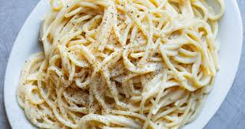

Home
Cacio e pepe

The easiest, tastiest, cacio e pepe to grace your plates and pockets
Ingredients
- 100g Pecorino cheese
- 8 Black peppercorns
- 160g Spaghetti
Method
- Get a saucepan full of water up to the boil and add a good helping of salt
- Add your Spaghetti and bring down to a simmer (use 1 minute less than package cooking time for Au Dente!)
- Lightly toast your peppercorns, keep an eye on them they burn easy!
- Bash your peppercorns down in a pestle and mortar
- Grate your pecorino and add to a bowl
- Get your smashed peppercorns back on the heat and add a ladel of pasta water from your spaghetti
- As your spaghetti nears cooking time, ladel some more pasta water over your pecorino and mix to a paste
- When spaghetti is just before Au Dente add to your peppercorn pan (Do not sieve, excess pasta water = good)
- Add in your pecorino paste and mix vigorously
- Take straight off the heat and enjoy immediately